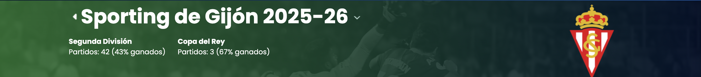
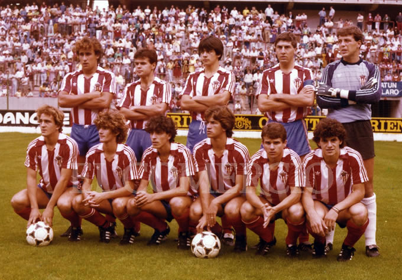

El club nació el 3 de septiembre de 1985 por
iniciativa de un
grupo de vecinos del barrio de El Llano que querían dar
continuidad a
un equipo de fútbol
regional que llevaba jugando desde los años setenta.
Las primeras temporadas se disputaron en
Regional Preferente, con una plantilla formada casi
en su
totalidad por futbolistas del propio barrio.
Entre 2003 y 2009 el club vivió su etapa más exitosa,
logrando
dos ascensos consecutivos y disputando por primera vez una
eliminatoria de
Copa del Rey ante un equipo de Segunda
División.
Aquella generación quedó marcada por jugadores como el
capitán
histórico, conocido por la afición como
"El Muro de El Piles".
Hoy, casi 40 años después de su fundación, el C.D.
Gijón
Atlético mantiene vivo el espíritu de club de barrio,
combinando la
competición en Tercera
División RFEF con una de las
canteras más
activas de Asturias.